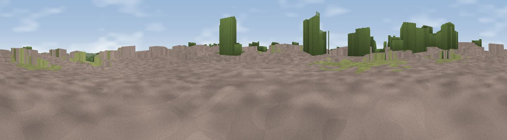

Viewpoint near Messingham
#43030 in England · top 85% of its area beats it · near Messingham · access?Where it is
The exact computed spot (SE 91662 04776). Click the marker for map links.
Public access: no public right of way or access land is recorded at this exact spot — it may be on private land. Computed from Natural England's CRoW access layer and OpenStreetMap rights of way — not the legal definitive map. Always verify locally.
The view, rendered

A 360° render of this exact spot computed from the terrain model, tree cover and land cover — summer colours, afternoon light, calibrated against photographs of famous viewpoints. Real trees, hedges and buildings will differ in detail.
The panorama
Grey silhouette: terrain skyline in each direction (720 bearings, Earth curvature and refraction included). Dashed green: skyline with trees (+15 m) and buildings (+8 m) as obstacles. Blue strip: how far the ground is visible on each bearing.
Where the view opens
Wedge length = distance to the farthest visible ground on that bearing (vegetation-aware). Rings at 10, 25 and 50 km.
What fills the view
49% cropland · 23% grassland · 22% woodland · 5% built-up · 1% water
Angular shares of the visible panorama (visual magnitude), not map area. Landscape diversity 0.54 (0–1 Shannon).
Key numbers
More beautiful places nearby
The staircase of upgrades: each row has a higher view potential than everything closer. Driving times are estimates from straight-line distance, calibrated against real road routing — check an actual route before setting out.
| Place | Direction | Drive | Score |
|---|---|---|---|
| Viewpoint near Scawby | E · 3 km | ~7 min | 22.5 |
| Ash Holt | SSE · 4 km | ~10 min | 32.2 |
| Viewpoint near Appleby | NNE · 7 km | ~15 min | 34.5 |
| Viewpoint near Grayingham | SSE · 8 km | ~16 min | 44.8 |
| Viewpoint near Burton upon Stather | NNW · 14 km | ~25 min | 53.6 |
| Viewpoint near Burton Stather | NNW · 15 km | ~28 min | 59.1 |
| Viewpoint near Burton Stather | NNW · 16 km | ~28 min | 60.6 |
| Viewpoint near Nettleton | ESE · 20 km | ~33 min | 64.7 |
53.53165, -0.61858 · source: osm peak · position refined by local search. Computed location — check access rights before visiting.